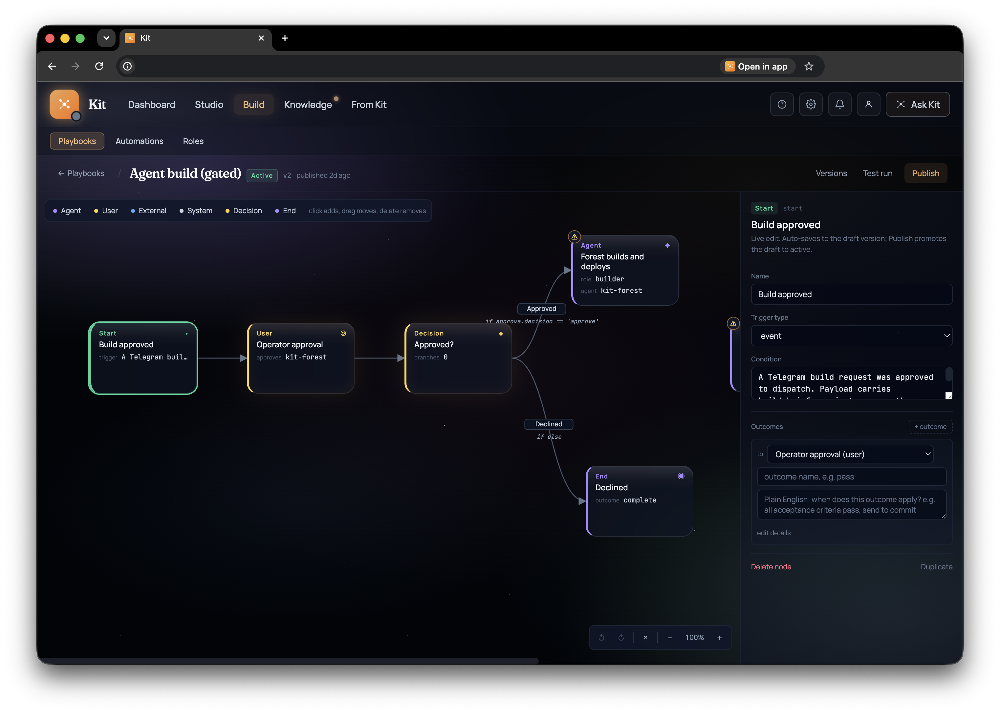
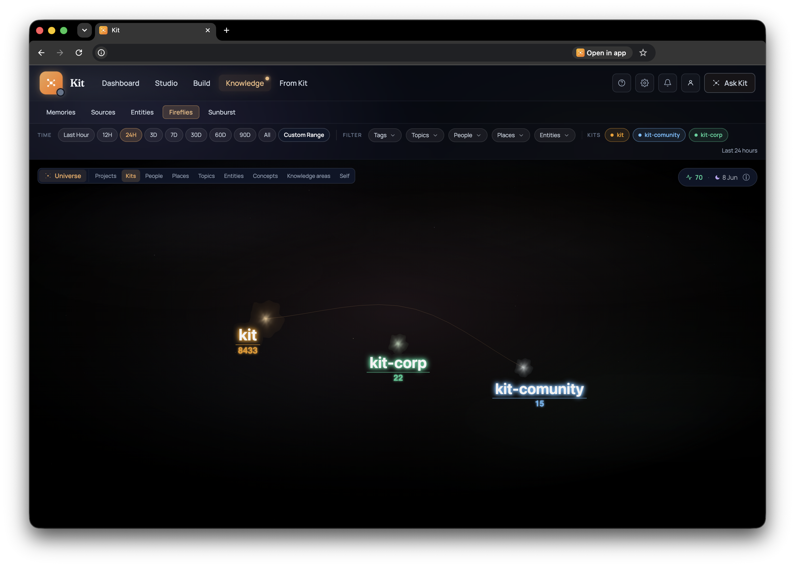
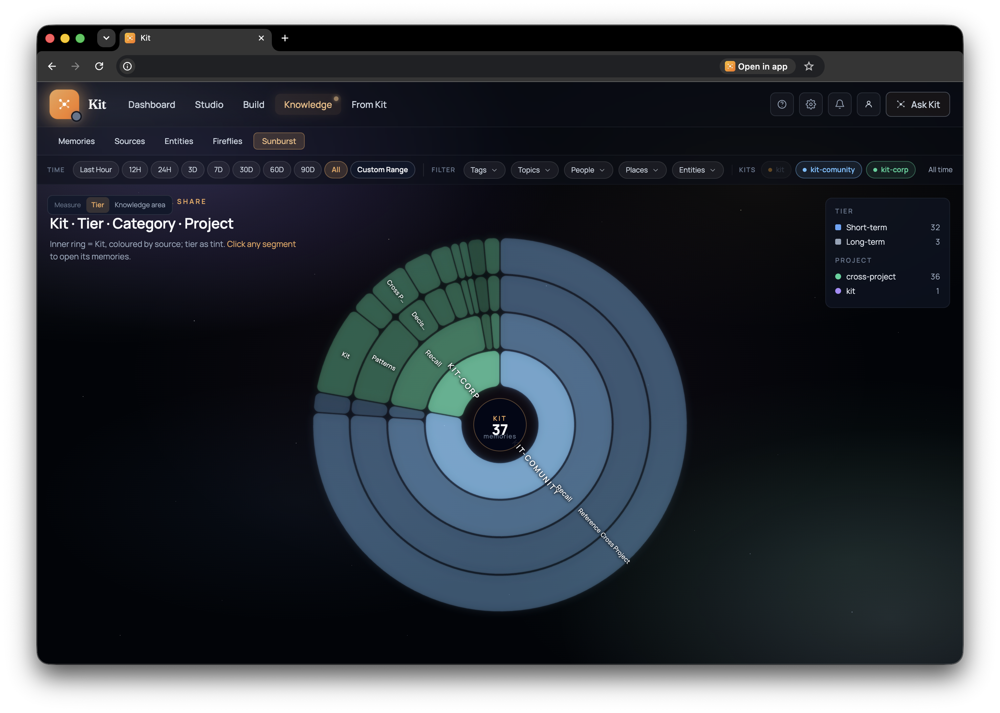
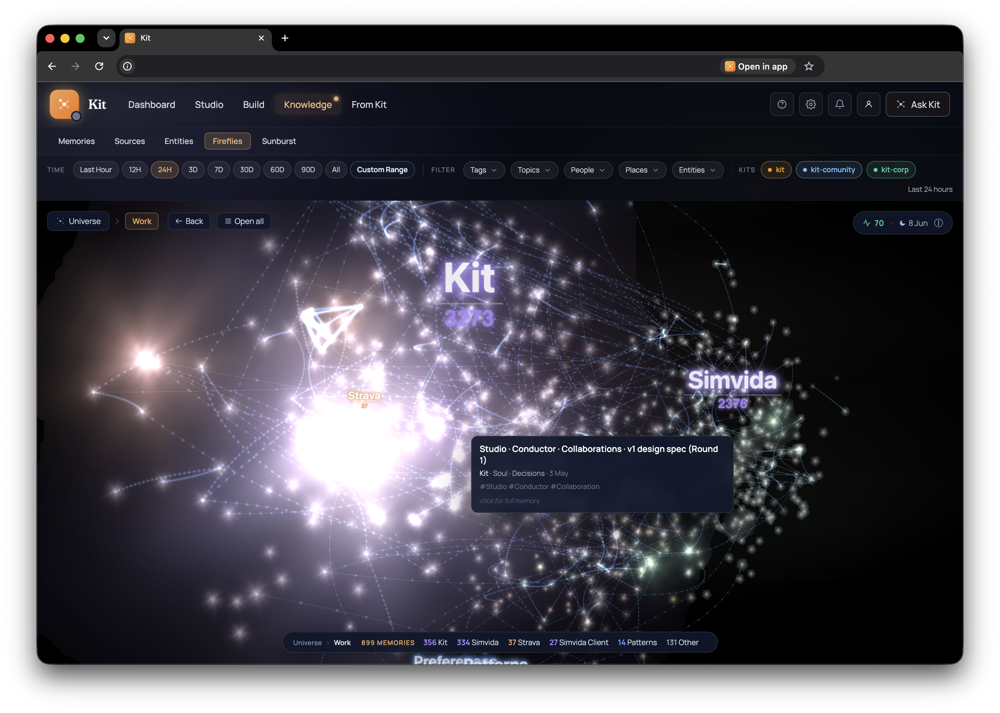

Your team is enabling someone else's competitive advantage
The quicksand AI providers are building is that you see the value first. The demo works, the pilot saves time, and your team starts filling in all the missing pieces around it: prompts that match your tone, workflows that reflect how approvals actually happen, customer exceptions that took years to learn, and policy decisions that never quite made it into a manual.
None of that feels dangerous in the moment, because everyone is just making the tool more useful. The sales team wants the CRM assistant to know which accounts are sensitive. Support wants the agent to remember how refunds really work. Finance wants the invoice workflow to stop asking obvious questions. Developers wire in the APIs, fix the prompts, add the guardrails, and slowly teach the system how the business actually runs.
That is exactly where the lock-in starts. Your team is not only using the platform; they are turning it into operational memory. Every correction, integration, workflow, and edge case becomes part of the value, and if that memory lives inside someone else's system, your people are quietly building someone else's competitive advantage.
The model is rented. The context is the moat. Make sure it is yours.

The value is not just the model
Most enterprise AI conversations still start with model choice. Should we use OpenAI, Anthropic, Google, a local model, something fine-tuned, something embedded in a product we already buy? That question matters, but it is not the question that decides whether you can leave later.
The model is increasingly interchangeable at the business layer. One will be better this month, another will be cheaper next quarter, a third will be approved by procurement because the contract is already in place. What does not move so easily is the context your people build around the model: the prompts, examples, tool calls, policies, approval paths, exception handling, customer memory, source links, and accumulated judgement that make the system work for your company rather than for a generic company in a demo.
That context is not a side effect. It is the thing you are really creating during an AI rollout. A useful support agent is not only a model with a chat box; it is the company's refund logic, escalation paths, tone, product history, customer memory, and learned exceptions bundled into something that can act. A useful finance agent is not only extraction plus approval; it is vendor history, budget logic, anomaly patterns, manager preferences, and the messy local truth of how approvals actually happen. A useful coding agent is not only code completion; it is your architecture, your tests, your tradeoffs, your deployment scars, and the local reasons the codebase looks the way it does.
If all of that lives inside a provider's platform, then the provider does not need to own your company to own the switching cost. Your team did the work. The platform keeps the compound interest.
Why this is an enterprise problem
For a person, losing context is annoying. For a company, losing context is operational risk. The problem is not only that it is hard to move from one AI vendor to another; it is that the work of teaching an AI system how the company runs becomes mixed into a place the company cannot fully inspect, govern, reuse, or revoke.
That matters because enterprise AI does not stay politely inside one product. A customer question might need CRM history, policy exceptions, previous support tickets, legal constraints, and a manager's approval habit. An invoice workflow might need vendor history, purchase orders, budget rules, fraud signals, and the remembered fact that this supplier always phrases one line item badly. A product agent might need Git history, roadmap decisions, design preferences, customer complaints, and the little bits of reasoning that never make it into documentation.
No single vendor owns that truth. It is spread across systems, teams, and relationships. If the memory layer that connects it all is also owned by a vendor, then your company's operating knowledge starts to consolidate outside your control. You may still own the raw records in Salesforce, SharePoint, GitHub, Jira, or the warehouse, but the useful working shape, the part that lets agents act well, lives elsewhere.
That is the quiet shift. AI providers are not only selling intelligence; they are becoming the place where your operational memory gets assembled. Once that happens, leaving is not a procurement decision. It is a memory migration.
What sovereignty means here
Sovereignty does not mean every company has to train its own model or build every tool from scratch. That would be a strange lesson to take from a world where models are improving monthly and good software already exists. Use the best models. Rent the intelligence. Plug into the tools that make sense.
The line is the company brain. Memory, provenance, permissions, learned exceptions, source links, and workflow context should sit in infrastructure the company controls. The model should arrive as a worker, not as the landlord. It can read what it needs, do the job, and leave without taking the accumulated operational memory with it.
That sounds obvious until you try to collaborate across boundaries. A company is not one mind. It has departments, subsidiaries, advisors, partners, clients, auditors, and vendors. They need to share context, but sharing usually means surrendering a copy. You export the document, send the data room, grant broad access, or push another integration into another platform. Then you hope the copy is handled well, deleted later, and not quietly used to teach something you did not intend to teach.
The better shape is smaller and stricter: lend a lens, not a copy. Let another agent see the narrow slice it needs, by reference, on your terms, and make the door close on the next read when the grant changes.
What we proved this week
This week we built that primitive between two kits Peter controls: a personal Kit and a professional ComUnity Kit. That is the honest boundary. This is not yet a public federation network among strangers, and it would be silly to pretend it is. What we proved is the mechanism that a sovereign knowledge network needs before it deserves a bigger claim.

The professional kit grants the personal kit a read-only, area-scoped key. The personal Kit can then see a narrow slice of ComUnity's knowledge inside its own Knowledge tab. Not all of it. Not a vague "shared workspace." A specific area. In the test case, the personal kit saw 15 of ComUnity's 57 memories, exactly the granted slice, and never the rest.

The important part is that the knowledge is read by reference. Nothing is copied into the receiving brain as a second ownerless version. The personal Kit reads the peer's memories live over the scoped key. If the grant is revoked or narrowed, the borrowed knowledge is gone on the next read. Not eventually deleted. Not replaced by a tombstone everyone has to trust. The door is simply closed when the receiver knocks again.
Inside the product, the borrowed memory feels first-class enough to think with. It appears in the same Knowledge surfaces, can show up in the 3D galaxy, and can sit beside local memories in a way that makes the relationship visible. But it is never quietly turned into local property. The source stays with the origin Kit, and drill-through points back to the real source.
Then we took the next step: connection, not just access. The graph now forms cross-Kit edges, so the receiving brain can draw a line from one of its own memories to a related memory in the peer kit, and graph recall can walk across that boundary. That is the thing that makes federation feel different from a read pane. Two minds can relate without merging.

The business version
Put this back into a company and the shape becomes practical. A support Kit could lend a product Kit a narrow window into complaint themes without handing over the full customer record. A finance kit could let an audit agent inspect the evidence for a decision without exporting the whole department's memory. A professional services firm could lend a client kit the exact project context needed for a workflow, and revoke it when the engagement ends.
The business outcome is not mystical. It is better governance over the thing that will soon matter most: the context that makes agents useful. Who owns it? Where is the source? Which slice did this agent see? Can the grant be narrowed? Can it be revoked now? Can two areas of the business learn from each other without dumping everything into one unsafe pool?
Those are not philosophical questions once AI starts touching live workflows. They are procurement questions, risk questions, architecture questions, and eventually board questions. If every serious AI rollout is also a memory rollout, then context ownership belongs in the first conversation, not the post-implementation cleanup.
The uncomfortable question
The uncomfortable question for every enterprise AI pilot is not "does it work?" It probably will, at least enough to keep going. The uncomfortable question is "where does the learning go?"
When your people improve the prompts, clean the workflows, connect the tools, write the policies, correct the agent, and teach the edge cases, are they building your company brain or someone else's? If the answer is someone else's, the pilot can still look successful. That is what makes the quicksand work. The value arrives first. The dependency reveals itself later.
Kit's answer is simple in shape and hard in implementation: the company brain should belong to the company. Models can be rented. Agents can come and go. Vendors can compete on quality, price, speed, and interface. But the memory your team builds while teaching AI how your business works should remain inspectable, portable, permissioned, and yours.
That is the sovereignty problem. Not a slogan about data. A very practical question about who gets to compound the value of your team's work.
That, is the work.